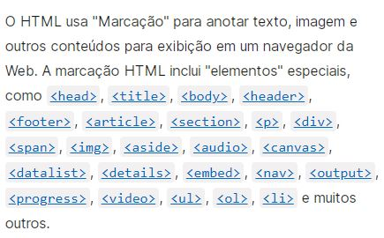
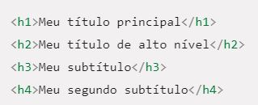

HTML significa linguagem de marcação de hipertexto. Podemos dizer que é a linguagem que os navegadores entendem. As paginas WEB são escritas em HTML e estruturadas em blocos.
Estes blocos escritos em HTML são separados por elementos especiais chamados "tags".
Elas são elementos especiais que possuem sentido ou semântica.
Quando queremos escrever um paragrafo usamos uma "tag" especifica para isso, para titulos usamos outra "tag". E assim vai, existem muitas "tags" que permitem a estruturação de uma pagina na internet. Veja abaixo alguns exemplos:
Os niveis de titulos vão de h1 até h6 conforme a importancia. A tag h1 é o titulo principal ou que possui maior importancia. Depois podemos usar subtitulos conforme a necessidade.
Sempre devemos ter em mente que não é apenas o tamanho do texto que muda, mas cada nivel possui sua importancia dentro da pagina, sendo o h6 o de menor importancia. Quanto ao tamanho do texte veremos a seguir...
Antes de prosseguirmos veja a imagem abaixo:
Todo o conteudo acima foi escrito usando "tags" especificas. Uma para o titulo, outra para os paragrafos e outras para as imagens.
Existem alguns elementos que são usados para que parte do texto tenha DESTAQUE este que voce esta vendo imita uma caneta marca texto.
Podemos tambem deixar palavras em ITALICO e NEGRITO
Existem "tags" com a semantica correta para dar enfase "Elas dão um sentido especial a palavra ou frase", USAR TAGS COM SEMANTICA VAI ALEM DA APARENCIA DO TEXTO.